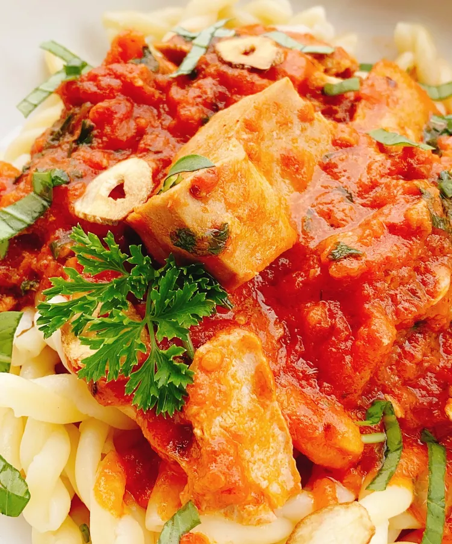

Spicy Tuna Pasta with Creamy Fra Diavolo Sauce

Here is the core content for Spicy Tuna Pasta with Creamy Fra Diavolo Sauce: HTMLSpicy Tuna Pasta with Creamy Fra Diavolo Sauce

Description
A bold and fiery Italian-inspired pasta dish featuring flaky tuna tossed in a rich, creamy, and spicy tomato Fra Diavolo sauce with garlic and red chili flakes.
Ingredients
- Pasta (like Penne or Spaghetti): 250g
- Canned Tuna in Olive Oil: 1-2 cans (drained)
- Crushed Tomatoes: 1 cup
- Heavy Cream: ½ cup
- Garlic: 3 cloves (minced)
- Red Chili Flakes (or Calabrian Chili): 1-2 teaspoons (adjust for heat)
- Olive Oil: 2 tablespoons
- Fresh Basil or Parsley: Chopped for garnish
- Salt and Black Pepper: To taste
👩🍳 Step-by-Step Instructions
- Boil the Pasta: Cook your choice of pasta in a large pot of boiling salted water according to package instructions until al dente. Reserve ½ cup of pasta water before draining.
- Make the Spicy Base: Heat olive oil in a skillet over medium heat. Add the minced garlic and red chili flakes, sautéing for about 1 minute until fragrant and golden.
- Build the Sauce: Pour in the crushed tomatoes and let simmer for 5 minutes. Stir in the heavy cream and let the sauce thicken slightly into a rich, creamy pink hue.
- Add Tuna and Pasta: Gently fold in the flaked tuna and cooked pasta. If the sauce is too thick, splash in a little of the reserved pasta water. Season with salt and pepper.
- Garnish and Serve: Top with fresh chopped parsley or basil and serve hot!